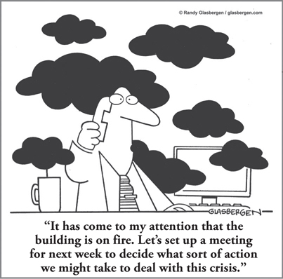

CHAPTER 18
Dealing with Disruption: When Business Adversity, Risk, or Crisis Strikes

CHAPTER HIGHLIGHTS
 Economic crises often stimulate inappropriate, counterproductive management behavior.
Economic crises often stimulate inappropriate, counterproductive management behavior.
 Leaders’ traditional ways of taking action in a visible crisis, such as micro-management and cost cutting, are often detrimental. Thinking preferences have a critical impact on all actions when dealing with a business disruption situation.
Leaders’ traditional ways of taking action in a visible crisis, such as micro-management and cost cutting, are often detrimental. Thinking preferences have a critical impact on all actions when dealing with a business disruption situation.
 Windows of opportunity are usually overlooked because legitimate safekeeping management thinking runs amok.
Windows of opportunity are usually overlooked because legitimate safekeeping management thinking runs amok.
 The complexity involved in the wake of disaster situations and other large-scale business disruptions requires a Whole Brain approach to decision making.
The complexity involved in the wake of disaster situations and other large-scale business disruptions requires a Whole Brain approach to decision making.
Another economic downturn was looming—the second in a decade, and one that by all appearances seemed likely to dwarf the previous crisis. The CEO of a small but growing business wanted to make sure that his company didn’t suffer the same problems it had before. When the economy had dipped eight years earlier, clients had cut back on services, product shipments were canceled, and sales and profits had plummeted. This CEO had a strong A-quadrant thinking preference, which he immediately began putting into action when he saw signs that the economy was receding. He put a very linear process in place to make preemptive budget cuts across the board. A new product launch was put on indefinite hold. Travel was allowed only in rare circumstances. “Nonessential” activities like a planned sales retreat were canceled, and the marketing team was trimmed back to a single administrative staff member. It was all straightforward, direct, and firm—no exceptions.
Did all the cost-cutting activities help the company fare better during the crisis? In fact, as the CEO himself will tell you, it lost much more during this second downturn than it had in the first: The cuts were so deep and his focus on budgets and numbers was so narrow that he couldn’t think about growth, and that kept him from making a critical strategic hire. Not only did he lose sight of the company’s strategic purpose, but he lost years of momentum. This loss of a long-term perspective ultimately put his business at greater risk than it had been after the first economic crisis.
During an economic downturn, when many companies feel the beginnings of a financial crisis in the form of falling revenues, management mentality often experiences an upper-left A-quadrant narrowing of focus to the numbers along with a lower-left B-quadrant safekeeping downshift. It is very tempting for managers who lean in those directions anyway to have an excuse for doing it on purpose. That is, they immediately begin to turn out the lights, lower the thermostat, cancel any discretionary spending, scrimp on needed purchases, and in general behave extremely conservatively with regard to any activity involving money, materials, or people. All that matters are numbers, and for those who have a high need for visible action, putting on the brakes is an obvious first option that observers of the managerial process can note and applaud.
When the question is asked, “What’s management doing?,” it’s comfortable and easy to answer, “It’s taking the lead in saving money.” Travel is curtailed. Expense account rules are tightened. Trade shows are canceled. Purchasing ground rules are severely tightened. Building for inventory stops. Advertising is pulled. Hiring ceases and layoffs begin. This is crisis mentality, which responds in the only way it knows—a knee-jerk retreat to safekeeping supervision of all identifiable processes and costs in the business. And it feels good because people are doing something.
The thought that this might be a window of opportunity for a particular product line never survives its initial introduction as a creative idea. The suggestion that this is the time to advertise, and to do so more creatively than before, is not given serious consideration. The idea of investing in retaining the trained workforce is rejected out of hand. The even more outrageous thought that this is an ideal time to further develop and hire key employees is shot down the moment it is verbalized. A senior vice president questions every possible expense: “Is this absolutely necessary?” “Isn’t there a cheaper option?” “Do our customers really need this?” Micromanagement and downward, one-way communication prevail.
While some of these actions may be appropriate, these edicts frequently add up to overkill and can be severely counterproductive. This kind of thinking exemplifies a legitimate, much-needed B-quadrant mentality—but in this case, it has run amok. And whether they work or not, these behaviors tend to place great power in the hands of those people who perform the safekeeping functions (for example, financial, operational, and administrative management). Once it has been given away, that power is difficult to reclaim.
Ironically, for managers who were brought up under traditional, status quo, safekeeping, security-minded management, the situation represents a return to sanity. They welcome it and collaborate enthusiastically to make the management culture one of survival. In many situations, however, it is just the opposite. It is a return to past practices that may have taken a whole generation to overcome.
It takes a certain leadership strength to stick to the vision that brought the company this far, to reexamine current events with a view toward midcourse corrections rather than a 180-degree turnabout. It’s not easy to keep an eye on the future when you’re putting out today’s fires. But there is one kind of business that is frequently more successful in maintaining the strategic view while dealing with an immediate crisis: those run by families. Family-owned businesses tend to avoid the knee-jerk lower-left shift because they are by their nature focused on future generations. They don’t ignore reality—they take the crisis situation seriously—but their inherent long-term focus on the company’s viability beyond the current generation of leaders is quite often a significant strategic advantage. There is plenty we can all learn from their example.
Whatever its nature, when a crisis appears, the appropriate leadership response should always include a four-quadrant walk-around of the decision process in each of the company’s key functions (see Figure 18-1) as well as at the CEO level, applications of creativity rather than a crowbar to problems, and diagnosis of the economic facts of life with a simultaneous assessment of appropriate risks and respect for the leadership intuition that brought us this far. Whatever decisions you make to deal with an impending crisis, don’t lose sight of the long view.
FIGURE 18-1 Walk-Around: analyzing decisions in a business crisis.
In fact, if you’re going to apply Whole Brain Thinking as a leader, there’s no better time than during a period of business crisis. This is the time to develop multiple options rather than considering only those that are security-minded and safekeeping, to employ savvy leadership rather than micromanagement. This is a time for wide-angle binoculars and celestial telescopes rather than microscopes. A lower-left downshift is the natural inclination, but in crisis after crisis, the companies that fare best are those that are both realistic about the situation and committed to the long-term vision. They are prudent, but not at the expense of ceasing to keep customers loyal and retain good people.
Under Pressure: Getting Priorities Straight
Disruption of all kinds is everywhere in today’s world. In just one example, within a two-year time frame, organizations in New Zealand faced financial industry turmoil, earthquakes, an oil spill, and biosecurity threats. The challenge for leaders is to navigate through and out of this disruption, and the best way to do that is with Whole Brain Thinking, as our colleagues in New Zealand discovered.
In looking at how organizations can be more adaptive and resilient during the recovery phase of complex, disruptive events, Dean Myburgh, Chris Webb, and Dr. Erica Seville1 focused on effective decision making and the key role it plays in helping to reduce vulnerabilities, especially in a disaster situation in which knowledge of and control over the environment are evolving and inadequate. Their research found that, because of the complexity involved, effective decision making in the wake of a disruptive event requires that leaders consider and balance their thinking with that of others, as well as engage new approaches.
In relative terms, decision making during a crisis-recovery situation is challenged more by the complexity involved than by the speed with which decisions must be made—even though speed is often the primary focus. Reflection that facilitates holistic decision making to address the complexities and the varying nature of recovery situations is vital if organizations are to enhance effective and responsive decision making.
While there is a tendency to “go A/B” in a financial crisis, in a disaster-recovery situation, the leaders may feel that they don’t have time to spend on the supporting data or processes and procedures. And this means that there’s a potential to overlook important considerations for decision making, particularly when it comes to what gets priority attention. Taking a Whole Brain approach allows the decision makers to look at the nature of the decisions and what mental resources they will require as well as the extent to which they will contribute to the desired outcome.
An Example of Implementing a Whole Brain Approach
Since economic downturns are, unfortunately, fairly common these days, let’s look at an example of how you might apply this in practice to a component of responding to a financial crisis.
Once you’ve clarified your initial decisions and completed the Whole Brain Walk-Around as shown in Figure 18-1, you’ll have several specific initiatives to take on. One typical response is the development of a cash management program. In most organizations, cash management is the responsibility of the finance function only. But if you look at it more closely, you’ll see that everybody in the organization plays a role in cash management. So instead of the usual negative actions involving misunderstood cuts and rash decisions, as described earlier in this chapter—the result of viewing the issue from a narrow functional and thinking preference standpoint—a very positive and effective approach is to make it an organization-wide effort and engage everyone’s best thinking.
Organizations that launch effective Whole Brain enterprise cash management campaigns are universally surprised by the results. There is excess cash everywhere. The exact amount depends on the functions and size of the organization, but the total is always a pleasant surprise.
Every member of the organization should be involved, and every function should set up a cash management project team, with each of these teams being heterogeneous (that is, made up of people who together represent a full range of mental preferences). Each person broadens the scope of the team’s constructive actions and recommendations.
The effective cash management program that I designed a number of years ago for General Electric generated more than $500 million in its first year of implementation. A major benefit of launching an effective cash management campaign is that the organization becomes trained in those techniques and attitudes that sustain the positive effect for several years after the launching of the initial effort. In fact, effective cash management changes the culture of the organization. Instead of feeling isolated from the organization’s initial crisis and ongoing everyday problems, employees become part of the solution. It has been my experience that whether teams find $50 or $5,000 or $100,000, they are so fulfilled by the team results that they are motivated to continue their efforts.
The key outcomes from programs like effective cash management are positive, quantifiable, visible results. Compare these outcomes to those of the typical negative, demotivational activities that result from crisis management. Well-designed programs tap into all four quadrants and, as a matter of fact, can be so successful that the crisis is avoided altogether.
Whether the program is addressing cash management, new product ideas, customer retention issues, or any other crisis-related initiative, there are steps you can take to make sure it’s successful. The following tips will help you design a program that hits all four quadrants.
Secrets of Success in Creating an Enterprise Program Designed to Overcome a Crisis (and the Primary Quadrants Involved)
1. Set up a Whole Brain team, clarify the program and the results that you want to achieve, and solicit C-level leadership support if possible. (A, B, C, D)
2. The results should be quantifiable, easy to measure, and reportable. (A, B)
3. Official scorekeeping should be the responsibility of the business function that is normally involved (for example, for cash management, usually finance). (A)
4. The program should be holistic and organization-wide, with the involvement of everyone. Reach out to the learning and communication teams for help as needed. (C, D)
5. Whole Brain teams of up to seven people should be formed in all functions and locations, all with the same specific assignment. For example, for cash management, the assignment should be to find all the cash in a specific segment of the business. (A, B, C, D)
6. The results of the program should be reported and communicated as soon as possible, widely, and regularly, on a specific schedule. (A, B, C, D)
7. The reporting process should focus on team results. (A, C)
8. Teams should be given recognition in the company (newsletter, intranet, etc.) and specific rewards. (A, C)
9. The rewards should be real and meaningful (for example, for cash management, proportional to the amount of cash found). (A, B)
10. The rewards should reflect the culture of the organization. (C, D)
11. Senior management should be involved in the recognition and reward process. (A, B, C, D)
12. Lessons learned should be captured using a postmortem evaluation process with consideration of making the program an ongoing effort.
Whatever the disruption may be, there’s one thing we can expect: there are sure to be more on the horizon. We were surprised to see how many of the business leaders participating in a program on how to apply Whole Brain Thinking to risk management and disruption realized that they were really unprepared. They had not thought about the possible need for disaster recovery or how they might respond to a major crisis—unless, of course, they had recently been through one. But preparation is critical; without it, we just react. One of the take-aways for these leaders was an action plan using a Whole Brain Walk-Around to think through what they needed to pay attention to in each quadrant in order to be prepared.
The CEO of a midsize business in the automobile industry recently demonstrated just how critical it was to prepare in a Whole Brain way. Although his primary preferences are more oriented toward the D quadrant and, to a lesser degree, the C quadrant, he has always made sure to cover his bases in areas of lesser preference by surrounding himself with complementary thinking partners. Listening carefully to his advisors’ suggestions, he closely evaluated the firm’s needs and chose insurance that had both the necessary protection and appropriate financial coverage in case of an incident. When a fire destroyed 90 percent of his offices and facilities, he was well covered and had in place much of what he needed financially to minimize the unavoidable stress and disruption that such an incident creates. This is a great example of being a situational Whole Brain leader.
How prepared are you? The most effective way to avoid a knee-jerk reaction is to adopt a Whole Brain approach to managing risk and your reaction to disruption, and to do it now, before a crisis occurs. This allows you to see the situation more clearly and reframe it, ideally as an opportunity to creatively reenergize the organization. One of the reasons it is essential to bring together the kinds of heterogeneous Whole Brain teams that we discussed in Chapter 12 is that the process immediately becomes easier to address, as more of your bases are covered. But even if you don’t have a Whole Brain team available, you can still apply Whole Brain Thinking to get the benefits of that thinking diversity by making sure that the team members understand their mode of thinking so that they can proactively address any gaps that may exist and reach out to others outside the team as needed.
SO WHAT?
 The natural inclination to limit our thinking by downshifting to one or two quadrants in a financial crisis can often do more harm than good.
The natural inclination to limit our thinking by downshifting to one or two quadrants in a financial crisis can often do more harm than good.
 The organizations that are most resilient in crisis situations or in the wake of business disruption are those that take a balanced approach to decision making while keeping the strategic, long-term view in sight.
The organizations that are most resilient in crisis situations or in the wake of business disruption are those that take a balanced approach to decision making while keeping the strategic, long-term view in sight.
 Leaders who fail to use Whole Brain Thinking may overlook important considerations that will have a significant impact on priorities, decisions, and actions.
Leaders who fail to use Whole Brain Thinking may overlook important considerations that will have a significant impact on priorities, decisions, and actions.
 Positive programs that engage the thinking of all involved, such as the effective cash management example, can generate the needed cash or other results quickly, and therefore reduce the economic threat.
Positive programs that engage the thinking of all involved, such as the effective cash management example, can generate the needed cash or other results quickly, and therefore reduce the economic threat.
 Negative programs usually don’t produce much cash, but usually do demotivate employees. At an individual level, you can use Whole Brain Thinking to better respond to both personal and professional disruptive events.
Negative programs usually don’t produce much cash, but usually do demotivate employees. At an individual level, you can use Whole Brain Thinking to better respond to both personal and professional disruptive events.